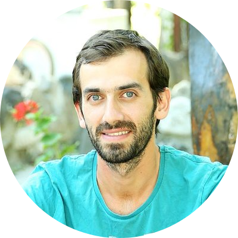

Geographer • Surveyor • Data Processor
I am a Ph.D. Candidate in Geography at Baku State University, with around 14 years of professional experience in surveying and geospatial data processing.
My career combines land surveying, offshore hydrographic surveying, survey data processing, GIS, cartography, and long-term practical work in spatial data analysis. Maps play a central role in my life, reflecting both my profession and my passion.
Ph.D. Candidate in Geography, with academic and practical specialization in geography, GIS, cartography, surveying, and spatial data interpretation.
| EIVA NaviSuite | 🌕🌕🌕🌕🌕 |
| Ranger 2 - Sonardyne USBL | 🌕🌕🌕🌕🌕 |
| APOS - Kongsberg HiPAP and the HPR systems | 🌕🌕🌕🌕🌕 |
| Delph INS Subsea - Exail | 🌕🌕🌕🌕🌕 |
| IXBlue Multilogger | 🌕🌕🌕🌕🌕 |
| AutoCAD | 🌕🌕🌕🌕🌕 |
| Visual Software | 🌕🌕🌕🌕🌕 |
| Digital Edge | 🌕🌕🌕🌕🌕 |
| Google Earth Pro | 🌕🌕🌕🌕🌕 |
| ArcGIS Desktop | 🌕🌕🌕🌕🌑 |
| ArcGIS Pro | 🌕🌕🌕🌗🌑 |
| Fusion 2 - Sonardyne LBL | 🌕🌕🌕🌗🌑 |
| DCT - Norbit data acquisition software | 🌕🌕🌕🌗🌑 |
| Surfer - 2D/3D Modeling | 🌕🌕🌗🌑🌑 |
| Global Mapper | 🌕🌕🌗🌑🌑 |